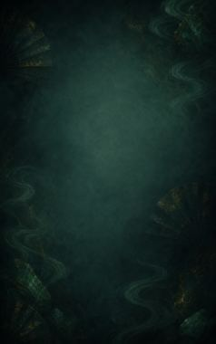
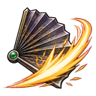

Fan Guard D
Hold the fan open for a fight to turn blows aside. (Needs a war fan.)
| Rank | Chakra | Cooldown | Class level |
|---|---|---|---|
| D | 8 | 10 s | 2 |

Technique trees › Fighting and weapon styles
5 techniques · Taijutsu tab
Unlocks through World of Naruto's own trees, a gene, a build choice or a profession.
Hold the fan open for a fight to turn blows aside. (Needs a war fan.)
| Rank | Chakra | Cooldown | Class level |
|---|---|---|---|
| D | 8 | 10 s | 2 |

A slash with the iron ribs of the fan. (Needs a war fan.)
| Rank | Chakra | Cooldown | Class level |
|---|---|---|---|
| C | 14 | 15 s | 4 |
One sweep of the fan blows everyone in front back. (Needs a war fan.)
| Rank | Chakra | Cooldown | Class level |
|---|---|---|---|
| C | 14 | 15 s | 6 |
Snap the fan open into a wall of wind that stops shots for fifteen seconds. (Needs a war fan.)
| Rank | Chakra | Cooldown | Class level |
|---|---|---|---|
| B | 24 | 25 s | 9 |
A cutting typhoon from one great sweep of the fan. (Needs a war fan.)
| Rank | Chakra | Cooldown | Class level |
|---|---|---|---|
| A | 40 | 50 s | 14 |